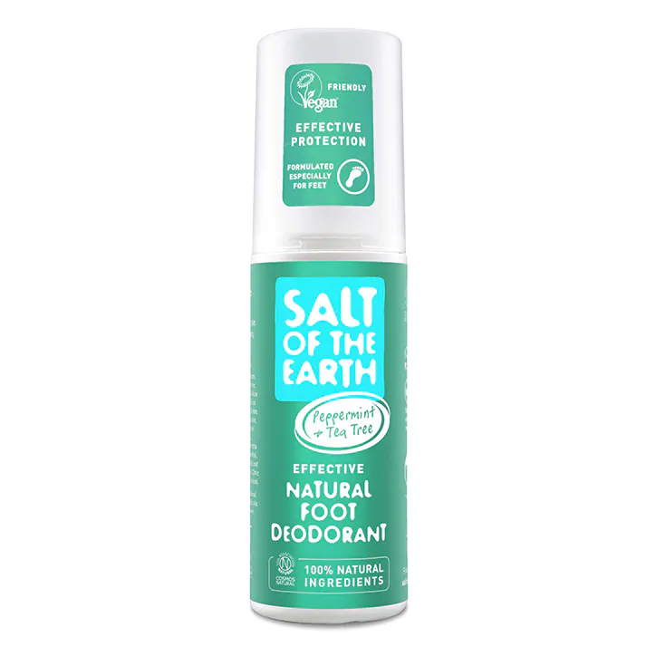

£9.99
Take care of discolored, cracked, and rough nails with Nail Repair. This daily nail care product is formulated with Tea Tree Oil and Vitamin E to provide intensive care, resulting in healthier and stronger nails.Say goodbye to cracked and discolored nails and enjoy the convenience of the included application brush. This product is vegan-friendly, making it a great choice for those who prefer cruelty- free products.